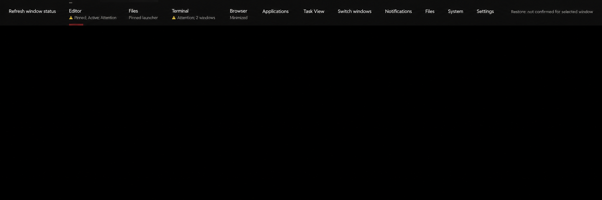
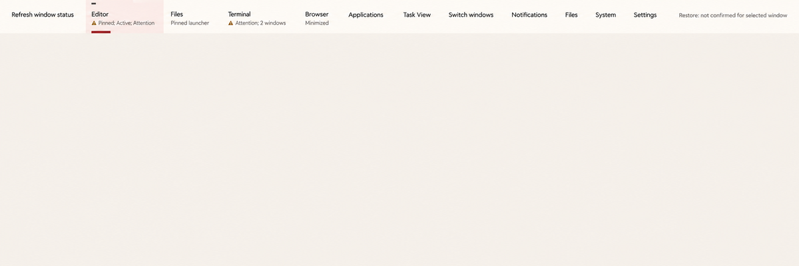

Source-shaped specimens with a proposed Elm status disclosure and typed state projection. Tab through controls and scroll horizontally. Status examples are quiet. Taskbar scenario.
The disclosure demonstrates the required renderer enhancement in the same bar as the existing status. Enter or Space opens it; Escape closes it and returns focus to its trigger. The panel has no live region. The native host needs a separate allocated popup for the panel.
The independent activity, window focus and attention attributes shown in the Night study require the renderer projection described in the specification. Typed outcome symbols require the same integration. These static controls do not issue actions.
The embedded specimen uses an 800px-wide viewport, 200% root text, long application and status labels, and effects off. Tab through the toolbar to reveal every item. The second bar shows document focus loss while retaining observed activity and window focus.
The images are illustrative and do not establish renderer geometry or state accuracy.

